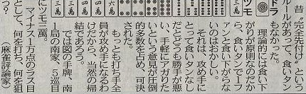

連続の何切るコラム...（^-^；

回答は 切りで、解説には「ここで食いタンは悪用。メンゼン仕上げがテーマ。となると打 が秀逸」とあった。手材料が豊富だし、一般麻雀はリーチすれば一発やら裏ドラやらオマケが多い。そこで 切りでのメンゼン指向は“秀逸”と云うより“順当”レベルと思うけど、ま、いっか.... 切りで、解説には「ここで食いタンは悪用。メンゼン仕上げがテーマ。となると打 が秀逸」とあった。手材料が豊富だし、一般麻雀はリーチすれば一発やら裏ドラやらオマケが多い。そこで 切りでのメンゼン指向は“秀逸”と云うより“順当”レベルと思うけど、ま、いっか....
実際こんなにまとまった手であれば、たぶんσ(-_-)も を切る。ただ この手の場合、４の三同刻の芽がある。三同刻となれば、対々和も絡みやすい。しかしこんなに手がまとまっていると、 や や  などを引いて順子手になってしまう可能性もある。しかしリャンペーコーならいいけれど、単なるタンピンになってしまっては物足りない。そこでσ(-_-)の場合、タンピンへの退路を絶つ意味で強引に などを引いて順子手になってしまう可能性もある。しかしリャンペーコーならいいけれど、単なるタンピンになってしまっては物足りない。そこでσ(-_-)の場合、タンピンへの退路を絶つ意味で強引に を切ってしまう可能性もある。これが奥の手 破釜沈舟（はふちんしゅう）、なんちて....（^-^； を切ってしまう可能性もある。これが奥の手 破釜沈舟（はふちんしゅう）、なんちて....（^-^；
とは云うものの、これは単なる前振り話（^-^； 今日の話のポイントは問題の前説。前説を素直に読めば、「麻雀はもともとクイタン無しの完先ルールが普通だった。しかし食いタン無しだと攻めにくい。そこで一翻役のタンヤオが食い下がりで無翻にならないのは理論的にはオカシイけれど、多数意見によって食いタンありと可決され、現在に至る」という内容にしか思えない。
「昔 “完全先付け”というルールが....」の“昔”がいつ頃のことを指しているのか分からない。しかしσ(-_-)の師匠が麻雀を覚えた1930af（S4）頃、すでに「食いタンアリの後付けアリ」が普通だったという。しかし食いタンアリの後付けアリというルールは完先のあとにできたというのだから、完先ルールは、少なくとも大正時代に行われていたということになる。いやぁ まさか麻雀が大正時代にそれほど普及していたとは、ちーっとも知らなかった....(^-^；
.それにしても、「多数意見によって食いタンありと可決され」とあるけれど、いったいどこで どういう人達が可決したんだろう...
|